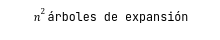

Muchos problemas se modelan de forma natural mediante grafos y dígrafos, y las estructuras de datos que implementan el grafo o el dígrafo ADT se utilizan habitualmente en informática. El tema de los algoritmos de grafos es un campo de investigación muy activo en la actualidad. Los grafos y dígrafos también desempeñan un papel importante en Internet y las redes de comunicación, transporte y flujo de mercancías, entre otras. La estructura subyacente de estas redes se modela de forma natural utilizando un grafo o un dígrafo. Abundan los ejemplos de grafos de redes. El sistema de autopistas interestatales puede modelarse mediante un grafo en el que los nodos representan ciudades (o cruces) y las aristas, autopistas que unen las ciudades. La World Wide Web puede modelarse mediante un grafo dirigido, en el que los nodos corresponden a páginas web y existe una arista dirigida de la página web A a la página web B si la página web A incluye un hiperenlace. Los grafos de la informática paralela sirven de modelo para las redes de interconexión. Y podemos utilizar grafos para representar la estructura de superposición impuesta en Internet para una red entre iguales como Gnutella .Además de sus aplicaciones en redes, los grafos y digrafos sirven como modelos naturales para otras muchas aplicaciones. Por citar un ejemplo de la informática Por citar un ejemplo de la informática, el flujo lógico de un programa informático escrito en un lenguaje de alto nivel es naturalmente modelado por un dígrafo de programa (lowchart). Los compiladores de optimización utilizan varias propiedades de este dígrafo, como componentes fuertemente conectados y coloreado de vértices, para ayudar a lograr el objetivo de traducir el código de alto nivel en código máquina que muestre un rendimiento óptimo.
Sin embargo, dos problemas fundamentales para grafos ponderados con amplias aplicaciones son el problema del árbol mínimo y el problema del camino más corto. El problema de encontrar un árbol mínimo en un grafo ponderado es especialmente importante en aplicaciones de redes. Por ejemplo, el problema se plantea en el diseño de cualquier red física que conecte n nodos, donde las conexiones entre nodos están sujetas a restricciones de viabilidad y peso. Ejemplos de este tipo de redes físicas son las redes de comunicación, las redes de transporte, los conductos de energía y los chips VLSI, entre otros. En todos estos ejemplos, el peso de un árbol mínimo proporciona un límite inferior al coste de construcción de la red. La búsqueda de los caminos más cortos en grafos y dígrafos ponderados también tiene innumerables aplicaciones en redes de diversos tipos. Por ejemplo, en una red informática o de comunicaciones, los datos se transfieren de forma más eficiente entre los nodos de la red a lo largo de un camino más corto entre los nodos, donde los pesos de los nodos son los mismos y las aristas representan la latencia de la comunicación. Otro ejemplo es un dígrafo que representa una red de vuelos de avión. El vuelo menos costoso (en términos de dinero. distancia o tiempo) de un aeropuerto a otro en la red es el camino directo más corto desde el aeropuerto de salida al aeropuerto de llegada, donde los pesos de las aristas son los costes apropiados. En este capítulo se analizará un solo algoritmo para resolver el árbol del camino más corto, en este caso, el algoritmo de Dijkstra.
Dado un árbol de expansión T en un grafo G con una ponderación w de las aristas E, el peso de T, denotado peso(T), es la suma de los pesos w de sus aristas. Si T tiene un peso mínimo sobre todos los árboles de expansión de G, entonces llamamos a 1 árbol de expansión mínima. En la figura l2.1 se enumeran todos los árboles de expansión de un grafo ponderado de cuatro vértices. El árbol de expansión mínimo se obtiene por inspección. El número de árboles de expansión, incluso para grafos relativamente pequeños, suele ser enorme, lo que hace inviable una búsqueda enumerativa por fuerza bruta. De hecho, Cayley demostró que el grafo completo K, con n vértices, contiene:
Afortunadamente, existen algoritmos eficientes basados en el método codicioso para encontrar árboles mínimos. En esta sección se tratará el problema de determinar la trayectoria más corta entre dos vértices cualesquiera en una gráfica ponderada. Se disponen de muchos algoritmos para determinar la trayectoria más corta en una gráfica ponderada. Se estudiará un solo algoritmo el cual fue descubierto por Edsger Dijkstra